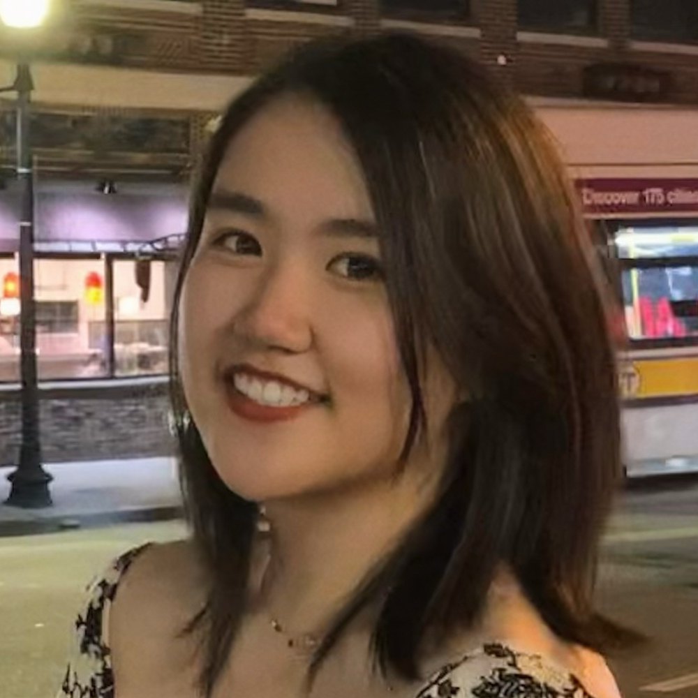
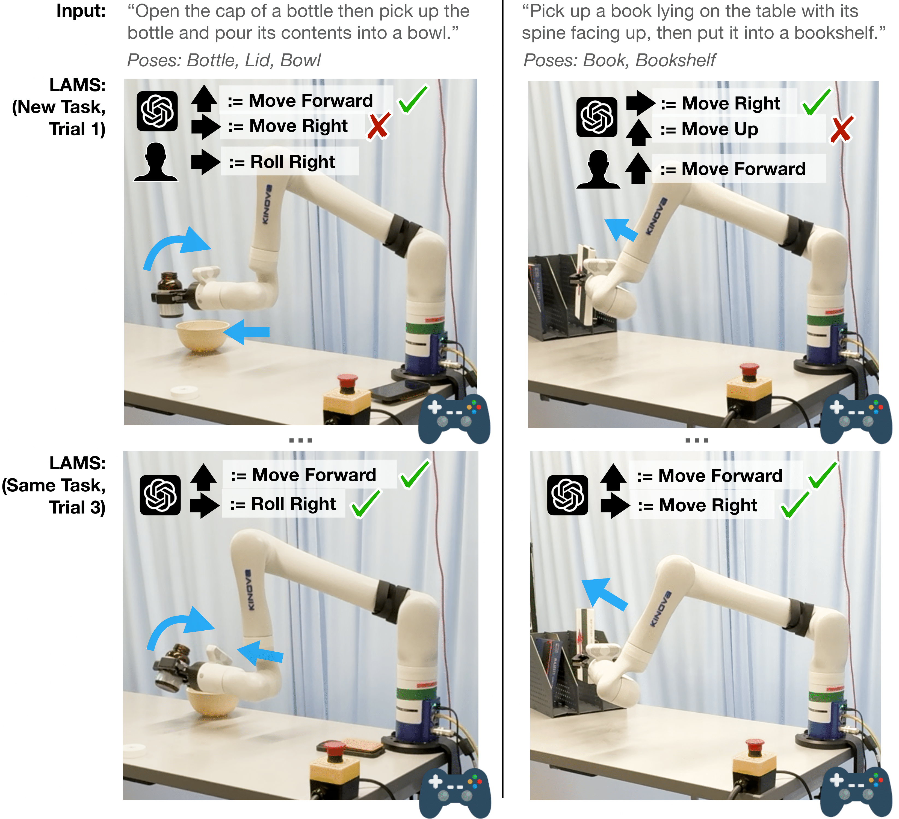
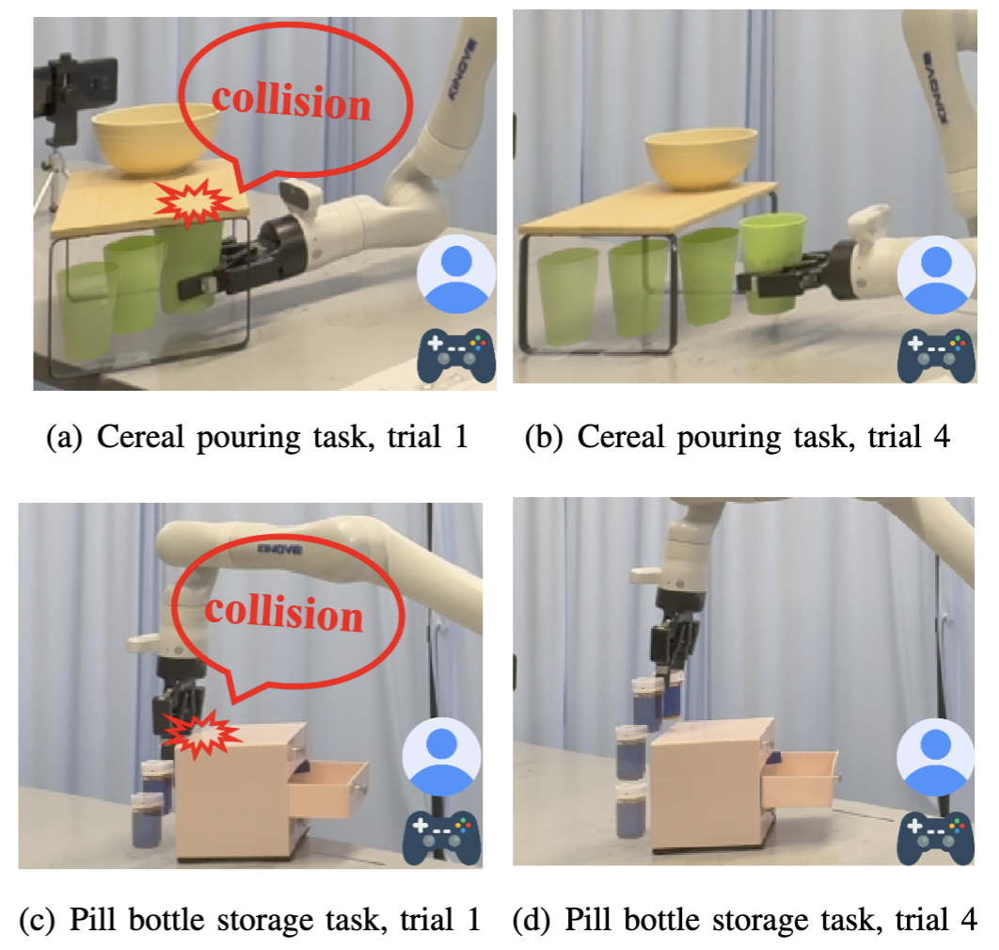
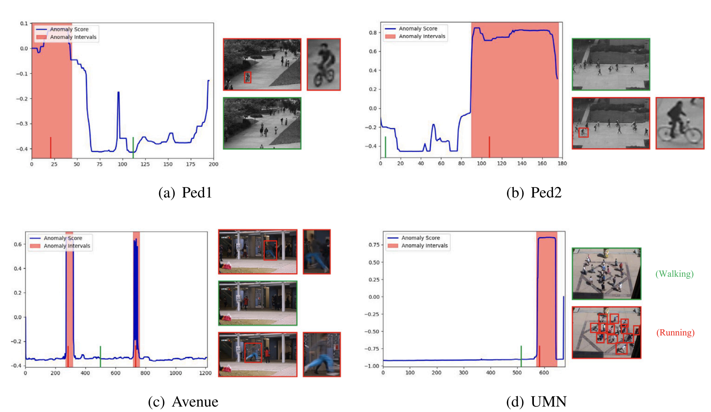
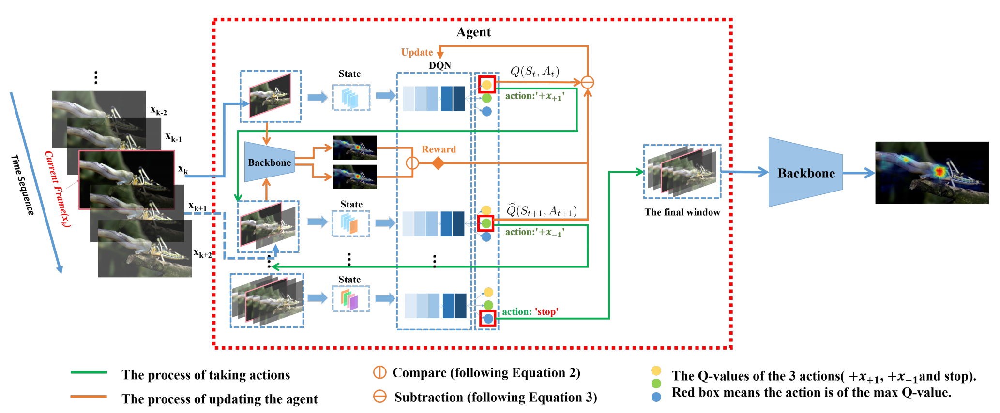

|
Hi there! I am a second year MS in Robotics (MSR) student at the Robotics Institute, Carnegie Mellon University. I am working with Prof. Zackory Erickson in Robotic Caregiving and Human Interaction Lab. I'm fascinated by the potential of robots to collaborate with humans, which is why my current research focuses on developing robot learning algorithms for Human-Robot Interaction (HRI). I obtained my bachelor's degree from Wuhan University, China, where I am fortunate to be advised by Prof. Zhenzhong Chen to work on computer vision research. I also spent half a year at Harvard University as well as MIT as a visiting undergraduate student, and was fortunate to be advised by Prof. Hanspeter Pfister to work on biomedical image analysis. |
 |
{kind=link}
|
I have primarily focused on robot learning, human-robot interaction (HRI), and computer vision. I am also broadly interested in the applications of machine learning across various academic fields. |
|  |
Yiran Tao*, Jehan Yang*, Dan Ding, Zackory Erickson HRI 2025 (Best Paper Finalist) We introduce LLM-Driven Automatic Mode Switching (LAMS), a novel approach that leverages Large Language Models (LLMs) to automatically switch control modes based on task context. LAMS requires no prior task demonstrations and incrementally improves by integrating user-generated mode-switching examples. |
|  |
Yiran Tao, Guixiu Qiao, Dan Ding, Zackory Erickson Submitted to IROS 2025 We introduce ILSA, an Incrementally Learned Shared Autonomy framework that continually improves its assistive control policy through repeated user interactions. |
|  |
Yiran Tao, Yaosi Hu, Zhenzhong Chen Journal of Visual Communication and Image Representation We propose a novel approach for Unsupervised Video Anomaly Detection (UVAD) that directly detects anomalies based on similarities between events in videos. Our method generates representations for events while simultaneously capturing prototypical normality patterns, and detects anomalies based on whether an event’s representation matches the captured patterns. |

|
Weijian Ruan*, Yiran Tao*, Linjun Ruan, Xiujun Shu, Yu Qiao IEEE Signal Processing Letters We build dataset for a novel task, namely video-based person re-identification during nighttime, and propose a temporal weighting appearance-aligned model to tackle this task. |
|  |
Yiran Tao, Yaosi Hu, Zhenzhong Chen IEEE International Conference on Visual Communications and Image Processing (VCIP), 2021 We propose a deep reinforcement learning agent that generates a window of frames containing the most highly correlated information for saliency prediction for each video frame, which assists backbone models to extract temporal information and promotes their performance. |
|
This website is modified from Dr. Jon Barron's public source code. |